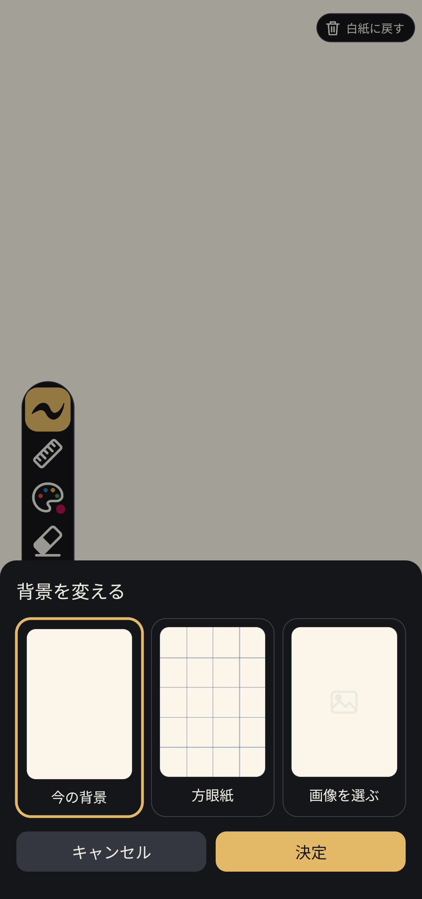
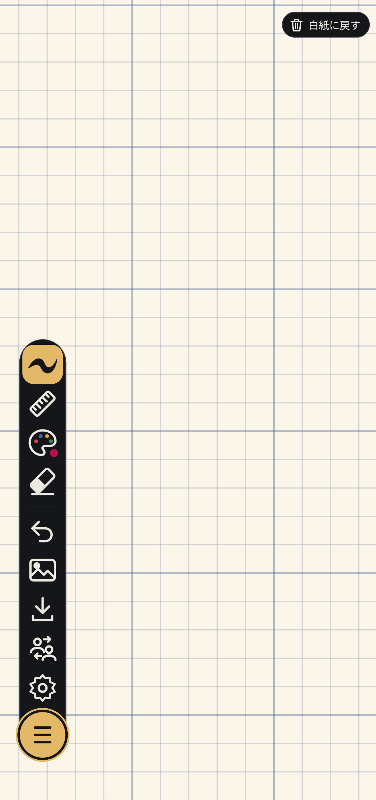
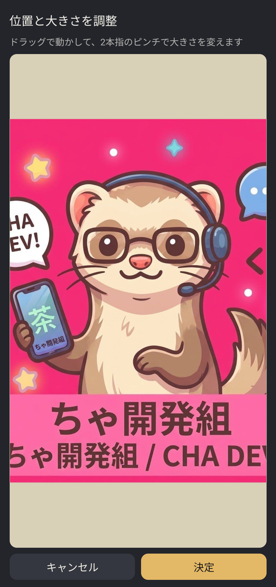
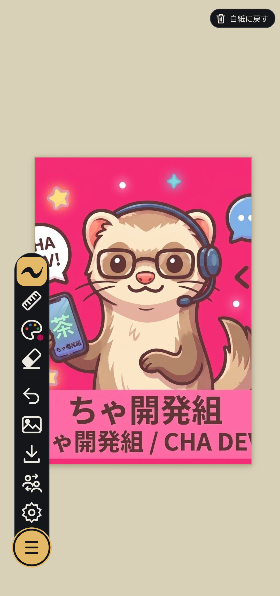

📖 はじめに（背景メニューの開き方）
ツールバーの写真アイコン（下から5番目）をタップすると、キャンバス下部に「背景を変える」シートが表示されます。

「今の背景（無地）」「方眼紙」「画像を選ぶ」の3種類から自由に選択可能
📐 方眼紙背景の活用
背景メニューで「方眼紙」を選択して「決定」を押すと、キャンバス全面に繊細なグリッド線（方眼紙）が敷かれます。

文字の練習、図面や間取り図、チェック表の作成などに最適な方眼紙モード
方眼紙のおすすめの使い方
- 文字・漢字の練習: マス目を目安にすることで、美しくバランスの取れた文字が書けます。
- 定規ツールとの組み合わせ: グリッドに沿って直線を引くことで、精密な表やレイアウト図が簡単に描けます。
- 手書きメモ・ToDoリスト: 行を意識して読みやすいノートを作成できます。
🖼️ 写真やイラストを配置する
「画像を選ぶ」をタップすると端末の写真ライブラリが開き、好きな写真やイラストをキャンバスの背景として読み込むことができます。
操作手順
写真の読み込みと位置・サイズの調整
- 背景メニューで「画像を選ぶ」をタップし、端末から配置したい画像を選択します。
- 調整画面が開きます。1本指でドラッグすると画像の配置位置を自由に移動できます。
- 2本指でピンチ（つまむ・広げる）すると、画像の大きさを直感的に拡大・縮小できます。
- 配置が決まったら、右下の「決定」ボタンをタップして確定します。

ドラッグと2本指ピンチで直感的にレイアウトを調整

画像の上に直接文字やイラストを重ねて描き込める
💡 塗り絵や下絵・写真メモとして活用
写真の上から蛍光マーカーでハイライトを入れたり、線画イラストを読み込んでクレヨンやペンで色を塗る「塗り絵」としても楽しくご活用いただけます。
❓ よくある質問
Q 背景に使える種類を教えてください。
「今の背景（無地）」「方眼紙」「画像を選ぶ」の3種類から選べます。ツールバーの写真アイコン（下から5番目）から開く「背景を変える」シートで切り替えます。
Q 読み込んだ写真の位置や大きさは調整できますか？
はい。「画像を選ぶ」で写真を選ぶと調整画面が開き、1本指のドラッグで位置を、2本指のピンチで大きさを変えられます。右下の「決定」で確定します。
Q 写真の上に文字や絵を描き込めますか？
はい。背景に配置した画像の上に、直接文字やイラストを重ねて描き込めます。蛍光マーカーで強調したり、線画を読み込んで塗り絵にする使い方もできます。